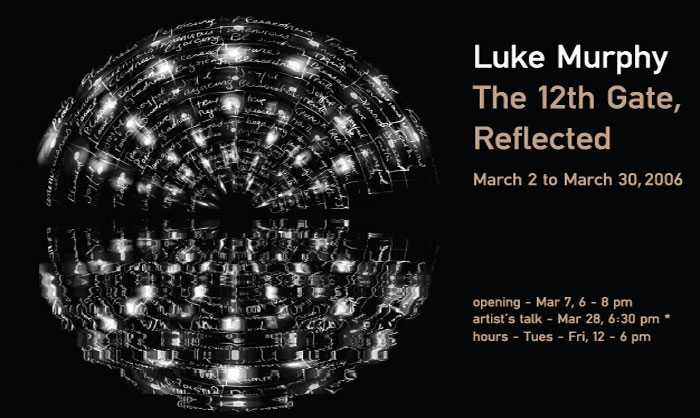

|
| |

Pace Digital Gallery
is extremely pleased to present Luke Murphy's installation, The
Twelth Gate, Reflected.
This installation consists of three projections. The primary projection
will be of the source code from the script running the work and from code
written by students and faculty in the Pace School of Computer Science
and Information Systems - the same building which houses the Pace Digital
Gallery. This projection is divided into a positive image and its reflection
into a “virtual pool” of water - often referred to as the
“Lake” effect. This effect is commonly found on the web to
make images appear to be reflected in a softly rippling lake or pool.
A camera is aimed at this from across the stairway and its image projected
and reflected on another wall. Additionally, a second camera is aimed
at this and its image projected on another wall. It is a kind of house
of mirrors with a virtual reflecting pool.
The Twelfth gate in some alchemical texts is know as “projection”,
and is a step in the transmutation of matter from one form to another.
"Reflection" is a term used in some programming languages and
refers to the means by which an interface or function can describe itself
to a user – that is, reveal what it is. This work will start from
source code, normally hidden, project and reflect it and then do the same
to the space it resides in.
The
Twelfth Gate, Reflected, is a site-specific installation
at Pace University. Brochure available at the gallery.
Luke Murphy will speak publicly about his work on Tues Mar 28, 6:30 pm,
with artist Marcin Ramocki. Click
for info on this free event.
Rev. Luke Murphy is an information-based artist, based in New York, whose work is united by common themes drawn from the impossible task of quantifying the elements of the psyche and spirit. He has a particular interest in the Gnostic gospels, Masonic ritual, religious paintings and digital languages - in effect, codes. Amorphous concepts are dissected and reassembled using the architecture of professional jargon and presentation techniques. Murphy's incessant need to organize ostensibly promises the viewer the hope of discovering a pattern or the key to the code and ultimately a shorter route to meaning, understanding and mastery of complex situations and emotions. This attempt to draw the connections within amorphous subjects, which in theory should soothe the viewer by simplifying the complex, instead reveals more layers of anxiety. The work's failure to deliver what they ostensibly promise is at once menacing and reassuring. Murphy has been producing and developing his work digitally since 1994 although a substantial portion of his work involves drawing and painting.
Murphy has had solo
exhibitions recently at Canada Gallery in NYC; Wynick/Tuck Gallery in
Toronto; Buro Fur Photo in Cologne, Germany; and Home in Queens, NY. His
work has also been featured at vertexList in Brooklyn, NY; Greene Naftali
in NYC; Märkischen Museum in Berlin; and The Queens Museum of Art
in Queens, NY. He has given performances at The Kitchen and PS122, both
in NYC.
Rev. Murphy graduated with an MFA from SUNY Purchase after completing
his BFA from the Nova Scotia College of Art and Design and a BS from the
University of Toronto. He is the co-director of cabinetmagazine.org and
Vice President of Web Development at MTV Networks.
Examples of his work
can be accessed at Luke Murphy's website: www.lukelab.com
Other links of interest: www.cabinetmagazine.org
| www.mtv.com